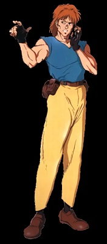

| Name | Togusa | Role | Cop | Armor |
|  | Gender | Age |  |
| M | 27 |
| Stats |
| INT | 8 |
| REF | 7 |
| TECH | 6 |
| COOL | 7 |
| ATTR | 7 |
| LUCK | 4 |
| MA | 6 |
| BODY | 7 |
| EMP | 8 |
| Run | 30 m |
| Leap | 1.5 m |
| Lift | 35 kg |
 | NameEnc. |
Light armor jacket0
Light armor pants0
Total0 |
| |
| Skills[Base / Total] | [Base / Total] |
|
Special abilities
Authority[ 5 / ]
Body
Swimming[ 3 / ]
Cool/will
Streetwise[ 5 / ]
Interrogation[ 6 / ]
Intimidate[ 3 / ]
Empathy
Human perception[ 6 / ]
Intelligence
Library search[ 3 / ]
Education & General knowledge[ 7 / ]
Expert (law)[ 6 / ]
Awareness/Notice[ 8 / ]
Hide/Evade[ 5 / ]
Shadow/Track[ 5 / ]
Wilderness survival[ 5 / ]
|
Reflex
Submachine gun[ 4 / ]
Athletics[ 4 / ]
Driving[ 7 / ]
Motorcycle[ 5 / ]
Stealth[ 5 / ]
Dodge & Escape[ 4 / ]
Rifle[ 4 / ]
Brawling[ 4 / ]
Handgun[ 9 / ]
Tech
Pick lock[ 5 / ]
|
| |
| Weapon(s)[#] | Type | WA | Conc. | Ammo | Dam. | #Shots[#] | ROF | Rel. | Range |
| Mateba Model 208[1] | PST | +2 | J | .357M | 3D6+2 | 6[2] | 2 | VR | 50 m |
| |
| Equipment | Cybernetic |
| Unknown | None |
| |
| Background |
| Togusa is considered an outsider by the other members of Section 9, because his body is completely human (except for his plugs and neural connection to the communications networks) and because he is married with kids. These are precisely the reasons that Kusanagi had him transferred to Section 9 from the police department. Motoko claims that his humanity acts as a foil to the rest of the members of Section 9, who are mostly cyborgs transferred from the military. Although Togusa is not as experienced as the rest of the Section 9 members, he is an integral part of the team. He prefers the use of his Mateba revolver to any of Section 9's high tech weaponry. |